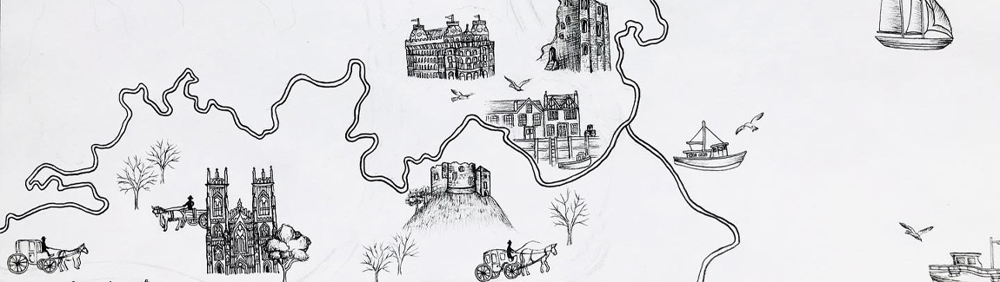

The Watcher and The Friend
Commissioned by the author R.J. Barron, I had the privilege of creating captivating map illustrations for the enchanting world of North Yorkshire and the charming coastal village of Runswick Bay. These illustrations are now showcased in the book titled 'The Watcher and The Friend'.
To capture the essence of the landscapes and buildings in Yorkshire, I delved into extensive research. Reading the book itself allowed me to uncover intricate details. I also did research into the landscape and buildings of Yorkshire. With a black ink pen, I sketched the illustrations, paying close attention to every fine element. To breathe life and add depth, I applied watercolor washes over the ink sketches. This technique brought vibrant tones and a touch of enchantment to each scene.
To see the map illustrations online visit https://www.rjbarron.co.uk